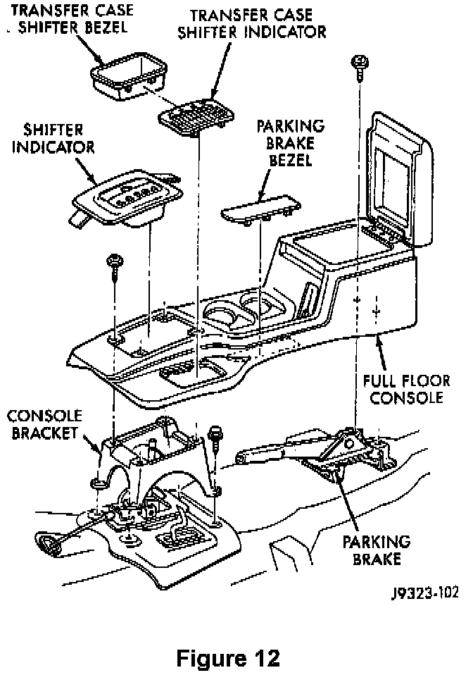
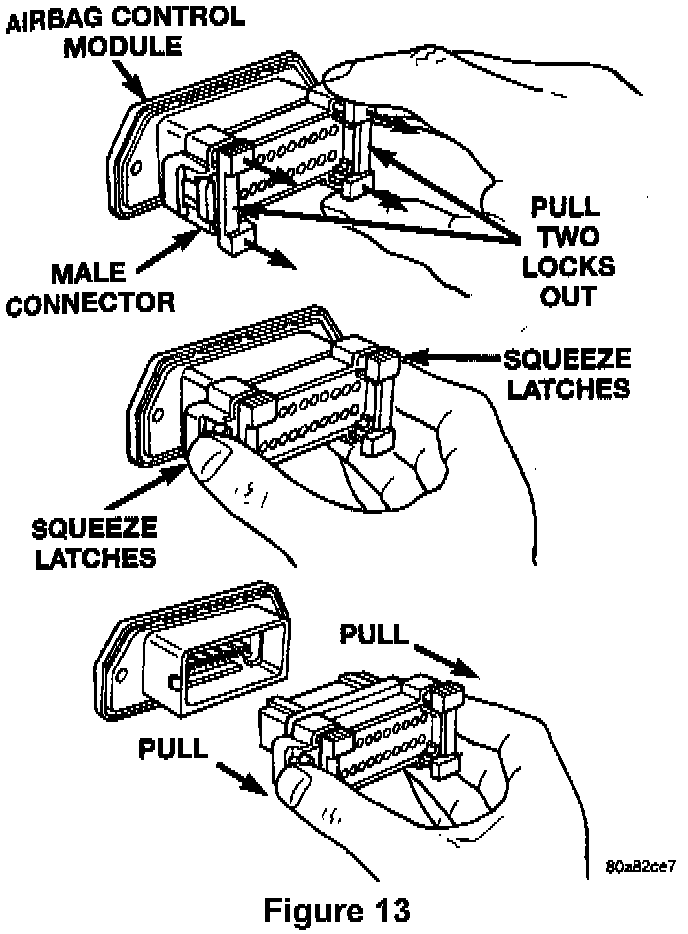
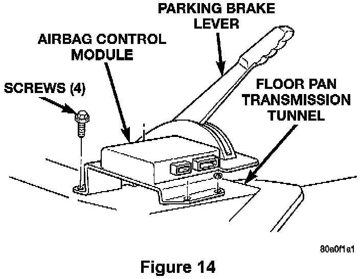

Service Procedure For Grand Cherokee (ZJ) Vehicles:
1. With the ignition key in the OFF position, disconnect and isolate the negative battery cable. WAIT TWO (2) MINUTES FOR THE SYSTEM CAPACITOR TO DISCHARGE BEFORE CONTINUING.Note:
To enhance customer satisfaction, remember to record all radio settings before disconnecting the battery and to reset all electronic memory (clock, radio settings, etc.) when you have completed the service procedure.
2. Remove the transmission shift lever handle by pulling straight up firmly and quickly.

3. Pry up the transmission shift indicator bezel with a trim stick (Figure 12).
4. Lift the bezel far enough to remove the lamp socket from the bezel and then remove the transmission shift indicator bezel from the console.
5. Pry up the transfer case shift indicator bezel with a trim stick (Figure 12).
6. Lift the bezel far enough to remove the lamp socket from the bezel and then remove the transfer case bezel from the console.
7. Remove the console attaching screws and then remove the console (Figure 12).

8. Disconnect the ACM wiring connector (Figure 13):
A. Pull the two white lock bars out about 1/8" (3 mm) on each side of the connector.
B. Squeeze the two (2) connector latch tabs between your thumb and forefinger while pulling the connector out of the module.

9. Remove the four (4) screws that secure the ACM mounting bracket to the floor transmission tunnel (Figure 14).
10. Remove the ACM and bracket assembly.
11. Install the provided ACM and bracket assembly with the arrow on the module pointing forward.
12. Tighten the four (4) ACM attaching screws to 95 in-lbs (10.7 N.m).
13. Connect the wiring connector to the ACM. Make sure it is fully seated and the lock bars are engaged.
14. Install the console and secure it with the attaching screws (Figure 12).
15. Install the lamp socket into the transfer case shift bezel and then install the bezel into the console (Figure 12).
16. Install the lamp socket into the transmission shift indicator bezel and then install the bezel into the console (Figure 12).
17. Install the transmission shift lever handle.
18. Connect the DRB III, turn the ignition switch to the ON position and then exit the vehicle with the DRB III.
19. Reconnect the negative battery cable and then watch the airbag light in the instrument cluster, it should light for about 6-8 seconds and then go out.
20. With the DRB III, verify that no system diagnostic codes have been set.
NOTE:
If the airbag warning lamp fails to light or the light stays on, or the DRB displays a diagnostic code, a system malfunction exists. Diagnose and repair the condition following normal service procedures.